Images, contours and fields# 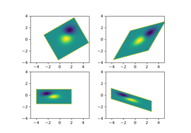 Affine transform of an image Affine transform of an image 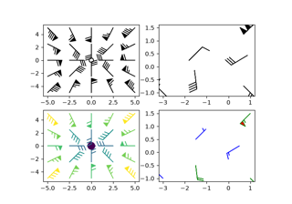 Wind barbs Wind barbs Barcode Barcode 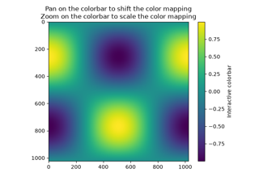 Interactive adjustment of colormap range Interactive adjustment of colormap range 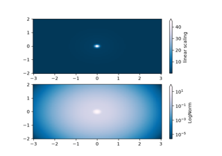 Colormap normalizations Colormap normalizations 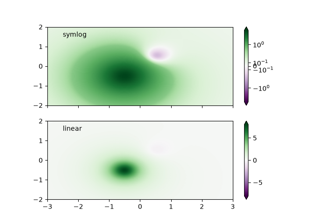 Colormap normalizations SymLogNorm Colormap normalizations SymLogNorm 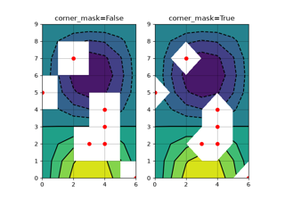 Contour corner mask Contour corner mask 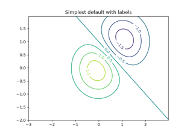 Contour Demo Contour Demo 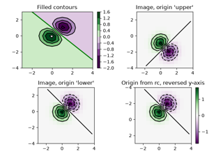 Contour image Contour image 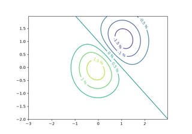 Contour Label Demo Contour Label Demo 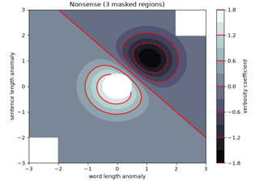 Contourf demo Contourf demo 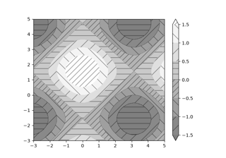 Contourf hatching Contourf hatching 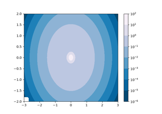 Contourf and log color scale Contourf and log color scale Contouring the solution space of optimizations Contouring the solution space of optimizations 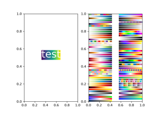 BboxImage Demo BboxImage Demo Figimage Demo Figimage Demo 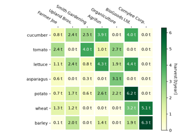 Annotated heatmap Annotated heatmap Image resampling Image resampling Clipping images with patches Clipping images with patches 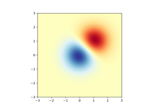 Many ways to plot images Many ways to plot images Placing images, preserving relative sizes Placing images, preserving relative sizes 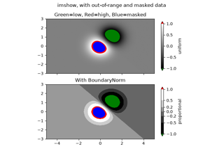 Image with masked values Image with masked values Image nonuniform Image nonuniform 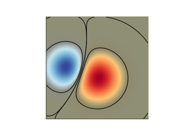 Blend transparency with color in 2D images Blend transparency with color in 2D images 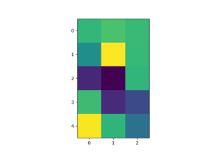 Modifying the coordinate formatter Modifying the coordinate formatter 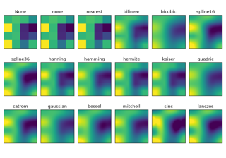 Interpolations for imshow Interpolations for imshow 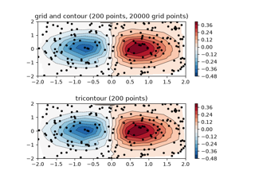 Contour plot of irregularly spaced data Contour plot of irregularly spaced data Layer images with alpha blending Layer images with alpha blending 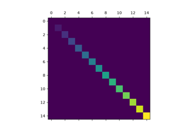 Visualize matrices with matshow Visualize matrices with matshow 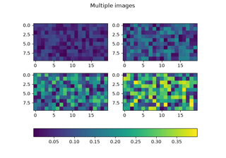 Multiple images with one colorbar Multiple images with one colorbar 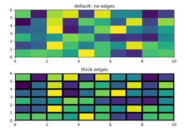 pcolor images pcolor images pcolormesh grids and shading pcolormesh grids and shading 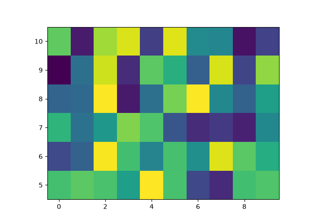 pcolormesh pcolormesh Streamplot Streamplot 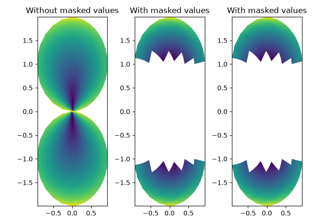 QuadMesh Demo QuadMesh Demo Advanced quiver and quiverkey functions Advanced quiver and quiverkey functions Quiver Simple Demo Quiver Simple Demo Shading example Shading example Spectrogram Spectrogram 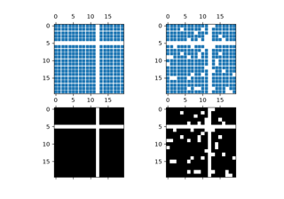 Spy Demos Spy Demos 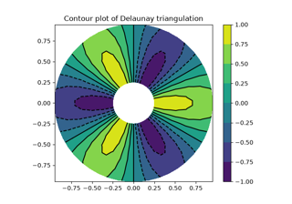 Tricontour Demo Tricontour Demo 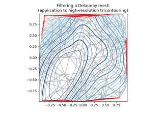 Tricontour Smooth Delaunay Tricontour Smooth Delaunay 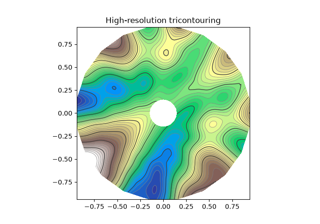 Tricontour Smooth User Tricontour Smooth User 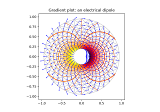 Trigradient Demo Trigradient Demo 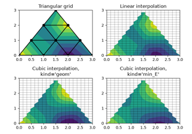 Triinterp Demo Triinterp Demo 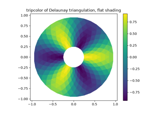 Tripcolor Demo Tripcolor Demo 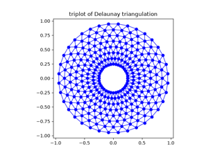 Triplot Demo Triplot Demo 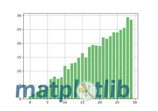 Watermark image Watermark image